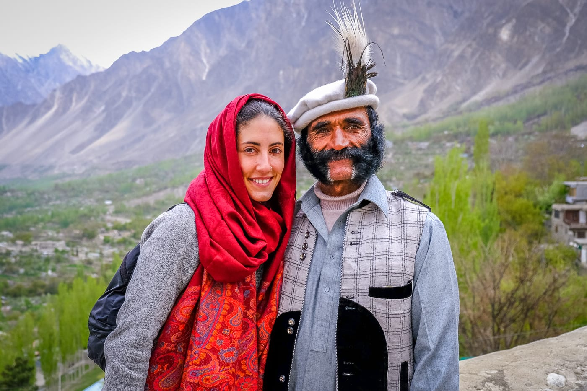

The Secrets of the Hunza People's Vitality
The Hunza people live longer, healthier, and happier – their secret lies in their diet,
lifestyle, and harmony with nature.

The Hunza people, living in the Karakoram Valley between Pakistan and India, have fascinated researchers for centuries with their longevity and exceptional health. They often live over 100 years, and many of them do not suffer from common modern world diseases, such as cardiovascular diseases, diabetes, or cancer.
Diet
Their way of life and diet are key factors contributing to their vitality. The Hunza people rely on a simple, natural diet rich in fresh fruits and vegetables, as well as whole grains and nuts. They are particularly known for consuming large amounts of apricots, which are rich in vitamin B17, believed to play a significant role in fighting cancer.Daily Life
In addition to their diet, the Hunza people engage in physical activity daily. Hiking through mountainous regions, working in the fields, and experiencing minimal stress make their lives harmonious and healthy. Their community also places great importance on mental health, togetherness, and spiritual balance.Perhaps the secret to the health of the Hunza people lies in their unique combination of diet, active living, and a positive attitude toward life. In a world that is increasingly turning to quick fixes and industrial food, their wisdom may offer us valuable lessons on how to live longer and better quality lives.